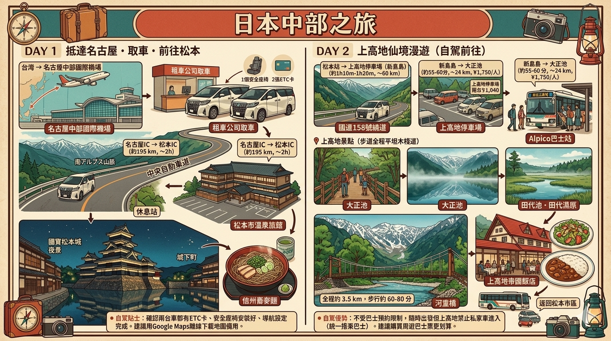
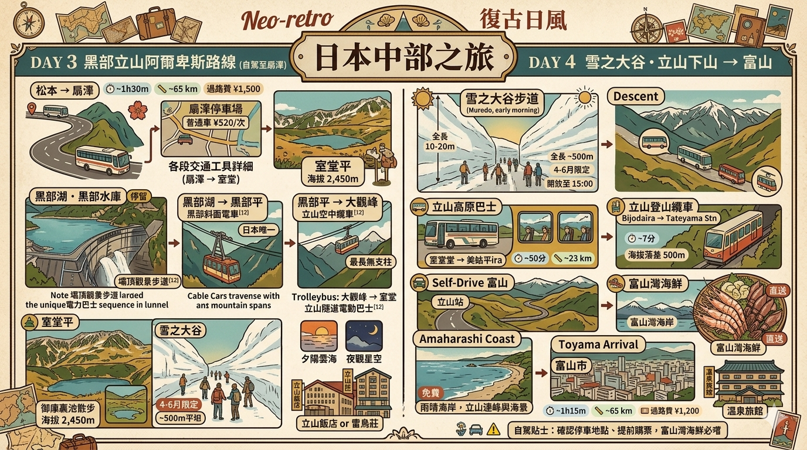

1
✈️ 出發日 · 抵達名古屋 → 取車 → 前往松本
台灣 → 名古屋中部國際機場 → 租車 → 松本市（夜宿）
移動約 4–5 小時（含取車）
|
台灣 → 名古屋中部國際機場（直飛）
中華航空 / 長榮航空，降落中部國際機場（Centrair）
⏱️ 約 2h40m
📏 約 2,100 km
|
|
🛬 名古屋中部國際機場抵達
入境、提領行李、換日幣，建議預留 1 小時
|
|
機場取車 → 兩台 Alphard / Vellfire
TOYOTA Rent-a-Car / Times Car Plus / Nippon Rent-a-Car 皆有機場服務櫃檯，步行 3 分鐘至停車場
⏱️ 取車約 30–45 分
📏 機場至松本市約 220 km
|
|
自駕：名古屋 → 松本市（高速公路）
名高速 / 中央自動車道沿途路況良好，2台車前後行駛
⏱️ 約 2h30m–3h
📏 約 220 km
💴 過路費約 ¥3,500–4,000（單趟）
|
|
🏙 松本市抵達 · 入住溫泉旅館
兩台車停放旅館停車場（市區停車費約 ¥500–800/晚）
|
|
🏯 松本城下町散步（選擇性，視體力）
旅館至松本城徒步約 15 分，兩台車可視需求開一台出去，松本城停車場 ¥300/次
|
| 💡 建議在名古屋機場直接取車不繞路，中央道沿途服務區發達，2小時後抵達松本正好休息。兩台車保持對講機或 LINE 語音聯繫。 |
📸 今日景點介紹

✈️ 名古屋中部國際機場（Centrair）
愛知縣知多半島西側的人工島機場，落成於2005年愛知世博會前夕。機場內設有溫泉浴場「風之湯」、購物街、展望台，即便長途飛行抵達也能在此舒緩疲憊。租車公司集中於到達大廳附近，步行即可取車。
💡 入境後換日幣建議在機場ATM（7-11銀行）匯率較優

🏯 松本城
日本現存最古老的五重天守閣之一，又稱「烏城」，黑色外牆配合白色壁面在雪景或藍天下極為壯麗。建於16世紀末，是日本100名城之一。城內無電梯，天守閣頂樓樓梯陡峭，長輩可在外護城河邊欣賞即可。松本城週邊步行區有許多土產店。
💡 黃昏打燈後拍照極美；早晨8:30開園人少

🛁 松本・淺間溫泉
松本市周邊有淺間溫泉（車程10分）和扉溫泉（車程30分），以泉質細膩著稱。市區旅館多含溫泉大浴場，部分提供北阿爾卑斯展望浴室，可邊泡湯邊眺望山脈。旅館多有免費停車場，適合自駕旅客。
💡 松本市盛產「山賊燒」（大蒜炸雞）與馬刺，晚餐必試
🗺️ DAY 1 路線地圖 · 名古屋機場 → 松本市

2
🌿 上高地仙境漫遊（自駕前往）
松本 → 上高地（停車）→ 大正池 · 田代池 · 河童橋 → 返回松本
移動約 2–3 小時（來回）
|
自駕：松本站 → 上高地停車場（新島島）
導航設定「上高地」，沿途路標清晰；山路彎道多，建議保持車距
⏱️ 約 1h10m–1h20m
📏 約 60 km
💴 國道158繞道免過路費
| |||||||||
|
🅿️ 上高地停車場（新島島）
上高地唯一自駕停車場，4–11月收費約 ¥520/台（普通車），兩台 ¥1,040；旺季可能滿車，建議 9:00 前抵達
| |||||||||
|
上高地線巴士 新島島 → 大正池（前往上高地）
停車場出來步行至巴士站約 3 分；進入上高地需預約巴士位，Alpico巴士（必須）
⏱️ 約 55–60 分
📏 約 24 km
💴 ¥1,750/人
⚠️ 必須預約
| |||||||||
| 📍 上高地景點（步道全程平坦木棧道，長輩友善） | |||||||||
|
🌊 大正池
倒映穗高連峰的晨霧湖面，站在岸邊即可欣賞，無需步行
| |||||||||
|
🌱 田代池 → 田代濕原 → 河童橋（步道散步）
大正池 → 河童橋：全程約 3.5 km，平坦木棧道，步行約 60–80 分鐘（含停留）。可中途搭接駁巴士短跳。
| |||||||||
|
☕️ 上高地帝國飯店（午餐）
建議提前預約；距河童橋步行約 5 分
| |||||||||
|
返程巴士 上高地 → 新島島停車場
上高地巴士總站搭車，返回停車場取車
⏱️ 約 55–60 分
💴 ¥1,750/人
⚠️ 確認末班車時間
| |||||||||
|
自駕返程：新島島 → 松本市區
山路約 1 小時返回松本市
⏱️ 約 1h10m
📏 約 60 km
| |||||||||
| 💡 自駕上高地的優勢：不受巴士預約限制，隨時出發但需注意上高地禁止私家車進入（統一搭乘巴士），停車後轉乘巴士進入。建議購買「上高地周遊巴士票」更划算。 | |||||||||
📸 今日景點介紹

🌊 大正池
1915年焼岳火山噴發造成梓川堰塞而成的天然湖泊，因大正年間形成而得名。湖面如鏡，倒映穗高連峰（海拔3190m）與周圍針葉林。清晨有大量水蒸氣形成晨霧，光線穿透時如夢似幻，被稱為「上高地最美的一景」。湖中有立枯木，為候鳥棲息地。
💡 早晨7–9時晨霧最濃，光線最美，攝影必爭時段

🌉 河童橋
上高地最具代表性的吊橋，橫跨梓川，背後是雄偉的穗高連峰。橋名來自當地流傳的河童傳說。橋長36.6m，橋上視野絕佳，前方穗高岳雪峰倒映在清澈河川中。此地海拔1504m，夏季也相當涼爽，是上高地的交通樞紐，周邊有餐廳、商店。
💡 橋邊設有上高地帝國飯店，建議早訂露台座位午餐

🌱 田代池 · 田代濕原
大正池與河童橋之間的靜謐濕地，木棧道全程平坦無障礙，長輩友善。田代池水源來自霞沢岳山麓伏流，水質清澈透明，水底可見砂礫。秋季（10月上旬）楓紅與濕原草地呈現金紅色彩，是日本攝影師最愛的秋景之一。
💡 步道全程木棧道，即使下雨也不泥濘，嬰兒車可通行
🗺️ DAY 2 路線地圖 · 松本 ⇌ 上高地

3
🚠 黑部立山阿爾卑斯路線（自駕至扇澤）
松本 → 信濃大町 → 扇澤（停車）→ 阿爾卑斯山脈路線 → 室堂
移動約 6–8 小時（含景點）
|
自駕：松本站 → 信濃大町 → 扇澤
國道148 / 國道19，沿北アルプス山麓行駛風景優美，山路彎道多
⏱️ 約 1h30m
📏 約 65 km
💴 過路費：松本→信濃大町約 ¥1,500
|
|
🅿️ 扇澤停車場（普通車 ¥520/次）
旺季停車場可能滿滿，建議 8:30 前抵達；兩台車停車費共 ¥1,040
|
🏔 立山黑部阿爾卑斯山脈路線 各段交通工具詳細（扇澤 → 室堂）
| 🚌 | 扇澤 → 黑部水庫（黑部湖） 關電隧道電氣巴士（地下隧道穿越，2019年更新為電動巴士） |
⏱️ 16 分 6.1 km |
| 🚶 | 黑部水庫步行 → 黑部湖站 壩頂步行（俯瞰黑部湖壯闊景色），約 10 分鐘平路 |
⏱️ 10 分 500 m |
| 🚠 | 黑部湖 → 黑部平 黑部斜面電車（地下纜車，日本唯一全地下纜車，坡度 31°） |
⏱️ 5 分 0.8 km |
| 🚡 | 黑部平 → 大觀峰 立山空中纜車（日本最長無支柱纜車 1.7 km，空中飛越黑部峽谷） |
⏱️ 7 分 1.7 km |
| 🚌 | 大觀峰 → 室堂 立山隧道電動巴士（2025年起取代原無軌電車，穿越立山隧道） |
⏱️ 10 分 3.7 km |
| 🏔 扇澤 → 室堂（含等待換乘時間）合計約 | ⏱️ 約 2–3 小時 | |
|
🌊 黑部湖 · 黑部水庫（停留）
壩頂景觀步道 500m（平路），可眺望翡翠藍湖面和後立山連峰。6月下旬–10月有壯觀放水（每秒 10 噸）。
|
|
🏔 室堂平（海拔 2,450m）抵達 · 入住
御庫裏池散步（木棧道，約 500m 繞湖）；雪之大谷（4–6月限定，平坦步道 500m）；夕陽雲海、夜觀星空。
|
| 💡 扇澤→室堂來回（阿爾卑斯山脈路線）建議直接購買來回票，12歲以上同大人票價，現場或網路預訂。旺季（4–5月、10月）人潮極多，建議 9:00 前抵達扇澤。 ⚠️ 自駕至扇澤停車後，兩台車的車鑰匙由誰保管？建議事先約定，以免影響行程。 |
📸 今日景點介紹

🌊 黑部水庫（黑部ダム）
日本最高的拱形水壩，壩高186m，耗費7年（1956–1963）建成，建造期間死亡171人。水庫容量約2億噸。翡翠色湖面四周環繞後立山連峰，被稱為「日本版的天空之湖」。每年6月26日起至10月15日進行放水，豪壯的水柱每秒最多達10噸，搭配彩虹令人震撼。
💡 壩頂展望台免費，出口有黑部水庫咖哩（知名名物）

🚡 立山空中纜車（ロープウェイ）
全長1.7km，是日本最長的無支柱纜車，單次可搭載80人，車廂在空中橫跨黑部峽谷，腳下是茂密原始林和深達1000m的峽谷。天氣晴朗時可眺望劍岳、龍王岳等後立山群峰，以及遠方的富山灣。整段搭乘時間僅7分鐘，但震撼感十足。
💡 大霧天能見度低，但雲海中穿行也別有風味

🏔 室堂平・御庫裏池（海拔 2,450m）
立山山麓的高原平地，御庫裏池（みくりが池）是日本最高海拔的火口湖，湖面湛藍，倒映立山三山。住宿設施「立山飯店」與「雷鳥莊」均在此，夜間無光害，銀河清晰可見。雷鳥是此地的代表動物，在草叢間常可遇見。
💡 高山症注意：抵達後先緩慢步行，避免劇烈活動1小時
🗺️ DAY 3 路線地圖 · 松本 → 扇澤 → 黑部立山阿爾卑斯路線

4
⛄️ 雪之大谷 · 立山下山 → 富山
室堂 → 美女平 → 立山站 → 富山（自駕移動）
移動約 3 小時
|
⛄️ 雪之大谷步道（室堂，早晨）
步道全長約 500m，完全平坦；4–6月限定，雪牆高 10–20m；開放至 15:00，早晨人少景美
|
|
立山高原巴士 室堂 → 美女平
沿途俯瞰立山杉巨木林道、彌陀原濕地，車窗欣賞不需步行
⏱️ 約 50 分
📏 約 23 km
|
|
立山登山纜車 美女平 → 立山站
海拔落差 500m，7 分鐘俯瞰立山山腳全景
⏱️ 7 分
📏 1.3 km
|
|
🚗 立山站取車 → 自駕前往富山
立山站停車場取車（如前一晚停放），或從美女平搭巴士回立山站取車
|
|
自駕：立山站 → 富山（富山灣）
國道41號／富山高橋 IC，開車輕鬆直達
⏱️ 約 1h15m
📏 約 65 km
💴 過路費約 ¥1,200
|
|
🌊 富山市抵達 · 入住溫泉旅館
富山灣直送白蝦、螢火魷、寒鰤，晚餐務必品嚐；兩台車停放旅館停車場
|
| 💡 這天從立山往富山方向行駛，途中可於「雨晴海岸」停車休息（免費），看到立山連峰與海景。 |
📸 今日景點介紹

⛄️ 雪之大谷（雪の大谷）
每年4月中旬至6月初限定開放，立山高原公路兩側的雪壁高度可達15–20公尺，形成壯觀的「雪谷」走廊。除雪作業每年需50天以上，最深積雪可達3公尺。步道全長500m完全平坦，雪牆觸手可及，親子同遊極為震撼。不同年份雪量不同，可提前查詢當年積雪高度。
💡 4月下旬積雪最高，5月底前往較不擁擠

🌊 雨晴海岸（あめはらし）
富山灣沿岸的絕景海岸，晴天時可眺望立山連峰倒映在寧靜的富山灣上，是全日本極少數能同時看到海與三千公尺雪山的景點。義經社（源義經藏雨之地）的傳說更增添古意。被選為「日本夕陽百選」，夏季日落時分立山剪影最為壯麗。
💡 免費路邊停車，下車即可拍攝，長輩零負擔

🦐 富山灣海鮮三寶
富山灣被稱為「天然的生簀（魚池）」，三大名物：白蝦（世界僅產於富山灣，甜度極高）、螢火魷（全球捕獲量九成來自此地，3–5月旺季）、寒鰤（冬季從日本海迴遊入富山灣，油脂豐厚）。富山站周邊「昆布締め」料理也是在地特色。
💡 富山站「きときと市場」可購買白蝦仙貝等伴手禮
🗺️ DAY 4 路線地圖 · 室堂 → 立山站 → 富山

5
🏘 白川鄉合掌村 · 前往金澤
富山 → 白川鄉 → 金澤（兩台車自駕）
移動約 2h30m–3h
|
自駕：富山 → 白川鄉合掌村
國道156號 → 國道471號，穿越東海北陸自動車道（或直接上高速公路）
⏱️ 約 1h20m–1h30m
📏 約 80 km
💴 過路費約 ¥1,800（部分路段免費）
| |||||||||
|
🅿️ 村營駐車場（荻町城跡附近）
普通車 ¥600/台，兩台共 ¥1,200；入口稍有坡度，排班需耐心；步行至合掌村核心地帶約 5–10 分
| |||||||||
| 📍 白川鄉合掌村（世界文化遺產）步行距離與時間 | |||||||||
|
🚌 展望台接駁巴士 → 荻町城跡展望台
巴士站 → 展望台：巴士 5 分（¥200）或步行上坡約 15 分；俯瞰整座合掌村全景，長輩建議搭巴士。
| |||||||||
|
🏡 合掌造聚落散步
停車場 → 和田家（重要文化財）：步行約 1 分；整個聚落散步全程約 1.5 km，石板路略崎嶇，建議穿防滑鞋
| |||||||||
|
🍖 午餐：飛驒牛朴葉味噌定食（聚落內餐廳）
| |||||||||
|
自駕：白川鄉 → 金澤
國道156號或直接上高速公路，兩條路線風景皆優
⏱️ 約 1h10m–1h20m
📏 約 76 km
💴 過路費約 ¥1,700
| |||||||||
|
🏯 金澤抵達 · 入住兼六園附近旅館
兩台車停放旅館停車場；晚餐：近江町市場周邊居酒屋，加賀料理或海鮮
| |||||||||
| 💡 這天兩台車一起出發，白川鄉停車場走路 5 分鐘可到展望台巴士站，建議先搭巴士上山看全景，再慢慢散步下來。旺季（10月紅葉、12月雪景）停車場非常擁擠，可能需停到外圍替代停車場（免費接駺車）。 | |||||||||
📸 今日景點介紹

🏘 白川鄉合掌村
1995年登錄UNESCO世界文化遺產，「合掌造」是指雙手合十的屋頂形狀，茅草厚達1公尺，可承受積雪3噸以上。荻町聚落現存約100棟合掌屋，其中部分提供住宿與餐廳。冬季雪景（12–2月）燈光祭期間，整個村莊宛如童話世界。飛驒牛霜降烤肉與朴葉味噌是當地名物。
💡 荻町城跡展望台是拍攝合掌村全景的最佳角度，早晨霧氣繚繞更夢幻

🌿 金澤・兼六園周邊
金澤是石川縣首府，江戶時代前田家的城下町，保存了大量武家文化與工藝傳統。兼六園（日本三名園之一）四季景色各異，園內有日本最古老的噴水。金澤城公園、東茶屋街（傳統茶屋建築）、近江町市場都在步行距離內，是日本保存最完整的城下町之一。
💡 金澤「加賀料理」必點：治部煮、加賀蟹、能登牡蠣

🥩 飛驒牛 · 朴葉味噌燒
飛驒牛是日本四大和牛品牌之一，在岐阜縣飛驒山區放養，肉質細緻、霜降均勻。「朴葉味噌」是飛驒地區的傳統料理，以朴樹葉鋪底，在炭火上慢烤特調味噌，再將飛驒牛肉片放入煮熟，香氣撲鼻。白川鄉聚落內有數間以朴葉味噌聞名的老店，用餐需事先預訂。
💡 五平餅（糯米烤餅）是白川鄉另一個必吃小吃，¥200/串
🗺️ DAY 5 路線地圖 · 富山 → 白川鄉 → 金澤

6
🏯 金澤漫遊 · 還車 → 返台
金澤 → 名古屋中部國際機場 → 還車 → 台灣
移動約 5–6 小時（含還車）
| 📍 金澤市區景點（兩台車可一台遊覽、一台停放市區） | |||||||||
|
🌿 兼六園晨間散步
飯店 → 兼六園：依住宿地點步行 5–15 分。園內散步全程約 1.5–2 km，碎石路平坦，冬季有融雪劑處理。早晨 7:00 前免費入園。
| |||||||||
|
🏯 金澤城公園 + 玉泉院丸庭園
兼六園毗鄰，步行 3 分；庭園全程約 800m，平坦
| |||||||||
|
🛍 近江町市場（購伴手禮）
兼六園 → 近江町市場：步行約 15 分（850m）或搭計程車 ¥700；建議在此採購海鮮及和菓子伴手禮
| |||||||||
|
自駕：金澤 → 名古屋中部國際機場（還車）
沿途經過米原 JCT → 名神高速，兩台車結伴同行
⏱️ 約 3h30m–4h
📏 約 300 km
💴 過路費約 ¥4,500（單趟，兩台共 ¥9,000）
| |||||||||
|
🚗 名古屋中部國際機場還車
還車前建議加油至滿油；機場還車櫃檯至停車場步行約 3 分；還車作業約 20–30 分
| |||||||||
|
名古屋中部國際機場 → 台灣（直飛返台）
建議選晚班機，保留足夠交通緩衝時間（建議 19:00 後起飛航班）
⏱️ 約 2h40m
| |||||||||
| 💡 建議早上 9:00 前離開金澤，12:00 前抵達機場還車，保證充裕時間。最後一天行李較多，兩台車可以分工：一台載大件行李直接去機場，一台在市區最後購物後會合。 | |||||||||
📸 今日景點介紹
🌿 兼六園
日本三名園（偕樂園、後樂園、兼六園）之一，由加賀藩前田家歷代藩主歷費180年建造而成。面積11.7公頃，融合了六個庭園美學：宏大、幽邃、人力、蒼古、水泉、眺望。冬季有「雪吊」松樹保護裝置，是金澤冬季的標誌景象。早晨7時前免費入園，推薦趁人少漫步。
💡 7:00 前免費，7:00 後收費 ¥320（65歲以上免費）

🛍 近江町市場（おみちょ）
金澤市民的廚房，300年以上歷史的傳統市場。約200家店舖販售能登海鮮（螃蟹、牡蠣、海膽）、加賀蔬菜、和菓子、金澤工藝品。市場內的迴轉壽司「大倉」以即撈海鮮著稱，現場食用最鮮美。2階設有免稅購物區，加賀棒茶、金箔製品等是熱門伴手禮。
💡 市場約 9:00 開始營業，10:00 前人最少，海鮮最齊全

🏯 金澤城公園 · 玉泉院丸庭園
前田家的居城，現存石川門（重要文化財）和三十間長屋，正在進行段階式復原工程。玉泉院丸庭園是第3代藩主珠姬的御庭，以石垣瀑布「色紙短冊積石垣」最具特色，夜間打燈後配合石垣倒映池面，是金澤最美的夜景之一。緊鄰兼六園，可步行往返，長輩友善。
💡 金澤城公園入場免費；玉泉院丸庭園成人 ¥320
🗺️ DAY 6 路線地圖 · 金澤漫遊 → 名古屋機場返台
📊 六天自駕總距離與費用概算（2台 Alphard 合計）
DAY 1
名古屋機場 → 松本
220km
過路費 ¥7,000–8,000（2台）
DAY 2
松本 ⇌ 上高地
120km
停車 ¥1,040 + 巴士（詳見上表）
DAY 3
松本 → 扇澤 → 室堂
65km（不含阿的山路）
停車 ¥1,040 + 過路費 ¥1,500
DAY 4
室堂（立山）→ 富山
65km
過路費 ¥1,200
DAY 5
富山 → 白川鄉 → 金澤
156km
停車 ¥1,200 + 過路費 ¥3,500
DAY 6
金澤 → 名古屋機場
300km
過路費 ¥9,000（2台）
📌 過路費合計（估算）：約 ¥23,000–25,000（2台來回）
📌 停車費合計（估算）：約 ¥3,500–5,000（景點停車場）
📌 建議使用「ETC PASS」或「外國人限定高速公路吃到飽」（如適用），可省下大筆過路費。
⚠️ 以上車程為正常情況估計，旺季（5月黃金週、10月紅葉季）等車時間可能增加 30–60 分鐘。
📌 停車費合計（估算）：約 ¥3,500–5,000（景點停車場）
📌 建議使用「ETC PASS」或「外國人限定高速公路吃到飽」（如適用），可省下大筆過路費。
⚠️ 以上車程為正常情況估計，旺季（5月黃金週、10月紅葉季）等車時間可能增加 30–60 分鐘。